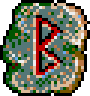
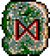

無
| 招光羅破 | Meteorflier |
|
| 隕石を呼び起こす攻撃呪術。亜空間を使って隕石群と局地を結び付け、亜光速で飛来する隕石群は放射能炎の衣を纏い、あらゆる物を駆逐する。まさに死の天使の光臨と言えよう。 | ||
| ヒーリング | Healing |
 |
| 治癒呪術。傷つき疲れ果てた体に、精気と活力を呼び戻す。神々の加護を受けた者に対する啓示として、偉大なる神秘の力を代行する呪乱苛酷な戦場に必要不可欠な存在。 | ||
| パワーヒーリング | PowerHealing |
 |
| 治癒呪術。1回の呪誼で複数に効果を発揮する。この呪誠により戦死者の数も減少する事であろうが、それでも命を失う者がいたとすれば、神の御心によりヴァルハラに招かれた違いない。 | ||
| セントクロス | Saintcross |
|
| 防御能力を高める呪術。偉大なる神々の神秘の力を代行して、目標物の周りに不思議な膜を張りめぐらせる。神聖なる衣は頑強な防御と共に、勝利の祝福を誘う事であろう。 | ||
| オーロラ | Aurora |
|
| 攻撃能力を高める呪術。偉大なる神々の神秘の力を代行して、闘争心を高揚させる。勝利への確信は恐怖や迷いを打ち払い、完全なる戦士をつくりだす。 | ||